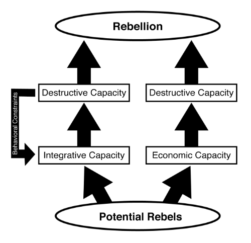

The Problem Of Rebel Mobilization
The Puzzle
When looking at the destruction of health systems in civil wars, we are presented with an empirical puzzle: why do some civil wars see widespread destruction to health systems and other civil wars see far less?
During Mozambique’s civil war, RENAMO’s campaign against the government health system caused more than two million people to lose access to health care (Cliff and Noormahomed 1993). In Colombia’s civil war, FARC fighters often targeted stocks of drugs destined for the civilian population (Beyrer et al. 2007). During the series of civil wars in the former Yugoslavia, both Croatian and Bosnian hospitals were targeted by the opposing side (Acheson 1993). When the Croat hospital in Vukovar fell to Yugoslavian Army units, soldiers took 300 patients, health workers, families of health workers, and other civilians from hospital grounds. Two hundred and sixty-four of them would eventually be found executed (Bloom 2006).
In other civil wars, rebel groups actively spare the health system. Although Nepal’s civil war witnessed the destruction of many rural health posts, the health system has fared remarkably well compared to other sectors due to a Maoist rebel policy of not disrupting government services used by citizens (Devkota and Van Teijlingen 2009). During their secessionist struggle against Ethiopia, Eritrean rebels took care to maintain the civilian population’s access to health care services (Sabo and Kibirage 1989).
Finally, during an inquiry into health system destruction during El Salvador’s brutal Sandinista insurrection (1972-1979), investigators did not find a single instance of rebel attacks on the government’s health system (Geiger et al. 1989). The goal of this chapter and the next is to answer this puzzle by explaining the factors shaping variations in health system destruction.
Power And Capacity
Capacity plays a central role in political behavior (Katzenstein 1978; Migdal 1988; Ikenberry 1988). Weber’s classic definition of the state as a “human community that (successfully) claims the monopoly of the legitimate use of force within a given territory,” includes a government’s capacity to defeat or deter challengers as the principle prerequisite of statehood. Recently there has been renewed interest in the role of state capacity in civil wars, with a special issue of the Journal of Peace Research dedicated to the topic (Sobek 2010). More broadly however, the capacity of all political actors, not just states, plays a central role in explaining civil war processes.
The bridge between state capacity typologies and non-state resource typologies is provided by Kenneth Boulding’s seminal work on power (1989). Boulding does not look at states or non-state organizations in isolation but attempts to develop a universal typology of power, applicable to all actors. He breaks down the concept of power into three categories: destructive, economic, and integrative. Destructive power is the ability of an actor to destroy. Militaries and other armed groups are the typical example of an organization based on the use of destructive power, being the “teeth and claws” of a larger organization (Boulding 1989, 140). Destructive power is closely related to traditional concepts of state power: the ability to coerce an actor to take an action they would not otherwise do (Mearsheimer 2003). Furthermore, if an actor has sufficient destructive power it is often enough to deter or coerce actors without resorting to its use. Destructive power also closely parallels the concept of state strength common in much of the civil war literature (Fjelde and De Soysa 2009) and is present in both Skocpol’s and Wang’s typologies of state capacity.
Boulding’s second type of power is economic. Economic power is the capacity of an organization to generate and manage financial resources. All organizations require some amount of economic power in order to exist. While corporations are organizations centered on economic power, political organizations need economic power as well:
Even governments, which are political rather than economic institutions, have economic aspects, and without some economic power they could not survive. They have personnel, that is, people who are associated with them, who work for them. In order to keep people working for them, they have to pay salaries or wages (Boulding 1989, 155).
Economic power is also closely related to destructive power, because the latter is often incapable of funding itself exclusively on its ability to destroy. For example, governments use their economic power to extract revenue from their citizens, which they use to fund a national military and increase their destructive power. Boulding’s economic power is closely related to Skocpol (1985) and Wang’s (1995) notion of the capacity to mobilize financial resources.
Boulding’s third type is integrative power. Integrative power is the ability of an organization to acquire and maintain the support and cohesion of social groups and communities and is derived from the “degree to which the personal identity of the members involved is bound up with their perception of the identity of the community or organization as a whole” (Boulding 1989, 173). Simply put, integrative power is power through social capital. Organizations based around integrative power are able to gain the social (and to a certain extent economic) resources of a community through trust, cooperation, and loyalty rather than threats and coercion. Churches and democracies are organizations based around integrative power because the identity of inclusion is often all that is needed for the organization to enjoy control over the community. While absent from Skocpol’s typology of capacity, integrative power is equivalent to Wang’s concept of legitimation capacity, or the ability to “dominate by using symbols and creating consensus” (1995, 89).
Solving The Problem Of Mobilization
Many non-state actors wish to violently oppose their political leaders, however most do not develop into active rebellions. The reason is based on the cost of building destructive capacity. To challenge a state, potential rebels must find the resources to mobilize an effective paramilitary organization, including recruiting fighters and acquiring war materials. Vinci (2006) calls this hurdle the “problem of mobilization.” Most non-state actors are not founded with destructive capacity; instead they must build organizations dedicated to destructive capacity (Boulding 1989). Sinn Fein’s political movement was not enough to mount an effective resistance against the United Kingdom. To do so, Sinn Fein founded the Irish Republican Army (IRA) as an organization to house their destructive capacity. Similarly, when the United Communist Party Of Nepal wished to mount violent resistance against the government of Nepal, they founded the People’s Liberation Army as an armed wing of their movement.
Founding organizations of destruction is a costly proposition and out of reach of most potential rebels. Even the wealthiest rebel groups do not internally have the resources to fund the development of destructive capacity. For this reason, potential rebels must look to external sources of support in order to build enough destruction capacity to have any chance of resisting the overwhelming military force of the state.
In his magnum opus on revolution, Mao Tse-Tung distinguishes between two types of guerilla groups loosely based on the method of their successfully mobilization. The first type is “based on the masses of the people” and “carried on in the interests of the people or a greater part of them … a broad basis in the national manpower” (Tse-tung 2009, 47). The second type is “supported by the puppet governments” and which “have oppressed the masses and have been contrary to the true interests of the people” (Tse-tung 2009, 47). What Tse-tung describes — long before non-state actors were prevalent in armed conflicts — are two solutions to mobilization: 1) using integrative capacity to draw support from the social capital of a population and 2) using economic capacity to acquire financial resources from an external patron. Tse-tung’s first type of guerillas mobilized by drawing on its integrative capacity, using “the masses of the people” to acquire the resources necessary to develop destructive capacity. In contrast, Tse-tung’s second type of guerillas exploits its economic capacity — made possible by an external patron — to pay the cost of mobilization. Most importantly, Tse-tung points out that the behavior of the guerillas towards the population is determined by the solution to the mobilization problem employed by the group. Guerillas relying on the population’s support operate “in the interests of the people or a greater part of them” while those relying on economic capital have “oppressed the masses and been contrary to the true interest of the people.” Parallel to Tse-tung, I argue that potential rebel groups attempting to develop destructive capacity choose between two solutions to the problem of mobilization — integrative and economic — and that their behavior towards the health system during conflicts is determined by that choice.
The first solution to the problem of mobilization is the use of economic capacity. In the economic solution to mobilization, potential rebel groups overcome the cost of developing destructive capacity by relying primarily on financial resources. Since these resources likely do not exist within the group, they must come externally. First, potential rebels can receive financial resources through a patron state. States support rebel groups to undermine international rivals through a proxy instead of engaging in direct conflict (Salehyan 2008; Salyhan 2010; Bapat 2007). In turn, rebel groups receive funding which they can use to purchase destructive capacity (i.e. supplies, weapons, and training). During Sierra Leone’s civil war, the Revolutionary United Front (RUF) rebel group received significant financial resources from Muammar Gaddafi’s regime in Libya. In a letter to Mohamed Talibi of the Libyan People’s Bureau in Accra an RUF official thanked Libya “again very much for the half million United States dollars which I received through you for the purchase of needed material to pursue the military mission” (Gberie 2005, 63). Two later letters requested the Libyan government send an additional \$700,000 and \$1,500,000 in order to allow more arms to be purchased. The economic capacity provided by the sponsorship of the Libyan regime was pivotal in the development of the RUF in the early stage of the conflict (Gberie 2005). During Nicaragua’s contra war, the United States provided tens of millions of dollars to the contras through weapons deals, third party governments, and private donors (Lee et al. 1987). This financial support was critical in turning the groups making up the contras from small dissident movements into large and effective paramilitary organizations. Without this support, it is likely few of the non-state actors making up the contra movement would have been able to build and maintain any significant destructive capacity.
Another means for rebel groups to create economic capacity is through the exploitation of extractable resources. Natural resources have a strong and often negative effect on civil war processes, including war onset (Basedau and Lay 2009; Ross 2004), war duration (Lujala et al. 2005), and rebel membership (Weinstein 2006). While rebel groups rarely use secondary and tertiary industries for financial gain, access lootable or exportable primary commodities can provide non-state actors with steady and significant economic capacity. The more extractable resources a potential rebel group has available to it, the more economic capacity they possess and the greater probability they will develop into a viable rebellion (Collier and Hoeffler 2004). In the Niger Delta, while youth do have grievances against the government “it is not seen to have high statistical effect on the probability of having a disposition to rebel participation” (Oyefusi 2008, 539). Rather, rebel groups in the Niger Delta recruit fighters — a component of destructive capacity — through financial incentives, provided by the extraction and exportation of oil — an economic capacity (Oyefusi 2008). Thus, rebel groups using an economic solution to the problem of mobilization do not rally new members through appeals to ideology, but rather hire them with financial resources (Weinstein 2006).
The second solution to the problem of mobilization is the use of integrative capacity. Often potential rebels do not have easy or significant access to financial resources. Under the integrative solution to the problem of mobilization, potential rebels draw upon their social capital (e.g. social networks, sense of community, shared identity) instead of financial resources to build destructive capacity. Economic resources are still important since armed conflicts are a costly activity, but it is not the primary resource available to these rebels. Instead of relying on an external patron or extractable resources to pay for war materials, integrative rebels rely on voluntary contributions (often non-monetary) from their supporters. Furthermore, groups using integrative capacity often do not have the financial resources to pay fighters a salary, instead they must appeal to recruits with intangible benefits such as grievances against the government, promise of a better future, and loyalty to one’s ethnicity or religion. Ideology plays a major role in integrative capacity. Ideology represents a way for the organization to attract more members and supporters. An important implication of relying on integrative solutions is the amount of material and human resources a rebel group receives is directly correlated with the number and commitment of their followers. The larger a potential rebel group’s base of support, the larger population they can draw upon for recruits and donations that can then be converted into destructive capacity. For this reason, rebel groups based on integrative capacity must be conscious about maintaining the hearts and minds of their supporters or else risk losing the source of their destructive capacity. Nepal’s Maoist rebels are an example of a rebel group employing integrative capacity. The Maoist’s greatest resource is not an external patron (which there are no reports of them having) or an extractable resource, but the Nepalese people:
The sectors of society to whom the Maoists appealed were largely ignored by traditional political parties, making them especially receptive to Maoist political discourse. By linking villagers’ dissatisfaction with their daily lives to larger problems in the political system, the CPN-M was able to exploit these grievances for the purposes of rebel recruitment (Eck 2007, 4).
One survey of Maoist rebels trained as health workers found that none of them had an economic or material incentive for joining, but rather did so because of a “class-based revolutionary consciousness” (Devkota and Teijilingen 2010). Uganda’s National Resistance Army (NRA) similarly relied on the country’s population for material support, admitting that the group “has learned that without the support of the people, it cannot carry on the struggle alone, and successful” (Mission to Freedom: Uganda Resistance News, 1981-1985, 151. Cited in Weinstein 2006, 175).
The Effect Of Solution Choice On Rebel Behavior
The solution to the problem of mobilization chosen by a rebel group shapes their behavior towards national health systems. Strictly in terms of military effectiveness, a rebel group’s best strategy is to impose no restrictions on their use of destructive capacity. That is, allow the group’s military power to be used wherever and whenever it is most effective, regardless of the harm to the civilian population and national infrastructure. However, since a group’s destructive capacity is dependent on their economic and integrative capacities, rebels are cogent to the fact that they should avoid employing violence in ways that might undermine their source of destructive capacity. Rebel groups mobilized through economic capacity have little need for restrictions on their use of violence. Their access to financial resources through an external patron or extractable resources is independent to their behavior in the conflict.
Rebel groups based on economic capacity are free to employ violence in any means they feel is most advantageous to the war effort — including attacking health systems. RENAMO, secure in its economic support from the South African, Rhodesian, and other governments, openly attacked government health care facilities and staff as a means of destabilizing the country, isolating rural areas from government control, and undermining the government’s legitimacy (Hultman 2009). During their conflict against the Sandinista government, contra groups regularly attacked the state’s health system and patients (New York Times 1985; Garfield 1985). This behavior hurt their popularity with the general population, however it had no significant impact on the amount of financial support they received from their external patrons. Thus, it is clear that rebel groups with economic capacity are free to employ violence however they deem most militarily effective with little risk of undermining their access to the financial resources they need to build and maintain destructive capacity.
In contrast, rebel groups relying on integrative capacity to gather resources must be cogent of the effect of their violence on the population — including civilian access to health care. Since they receive the majority of their resources not from some external patron or extractable resources but from a population of supporters, integrative rebel groups must be careful to make sure their military actions do not create a civilian backlash. Evidence of this concern for the hearts and minds of the civilian population can be seen in the documents of two rebel groups which relied to a significant degree on integrative capacity for their recruits and resources. The Irish Republican Army’s (IRA) “Green Book” instructs members of the rebel group to be mindful of maintain the support of the local population:
By now it is clear that our task is not only to kill as many enemy personnel as possible but of equal importance to create support which will carry us not only through a war of liberation which could last another decade but which will support us past the ‘Brits Out’ stage to the ultimate aim of a Democratic Socialist Republic (IRA Green Book, 8)
Che Guevara’s seminal work of guerilla warfare, written after fighting with the 26 July Movement (which relied heavily on integrative capacity), argues a guerilla group “draws its great force from the mass of the people themselves” and having “the full help of the people” is an “indispensible condition” of victory (Guevara 2010, 20). The 26 July Movement’s ability to build and exploit their support amongst the people is considered one of their major advantages over the Batista regime, and a major reason for their eventual victory (Hildebrandt 1991).

Since rebel groups relying on integrative capacity have a need to maximize civilian support, they have an incentive to place restrictions of their use of violence when it might harm civilians directly or disrupt their access to vital services. These rebel groups still employ widespread violence, however they must do so mindful of minimizing it’s impacts on their supporters. These restrictions have important effects for the national health system.
Health systems are widely used by the civilian populations, frequently even in communities opposed to the government. During civil wars, populations can both be providing material and financial support to a rebel group and be utilizing the government’s health care system. Rebel groups able to mobilize and fund their destructive capacity from an external patron or extractable resources are free to attack the health system (or simply be unconcerned about disrupting it) if doing so improves their wartime prospects. On the other hand, rebel groups relying on their integrative capacity must avoid attacking or damaging the health system even when it is controlled by the government, because disrupting health services risks losing the social capital through which they gather their destructive capacity.
Sources
- Acheson, D. 1993. “Health, humanitarian relief, and survival in former Yugoslavia.” BMJ 307(6895): 44-48.
- Beyrer, Chris et al. 2007. “Neglected diseases, civil conflicts, and the right to health.” The Lancet 370(9587): 619-627.
- Bloom, J.D. et al. 2007. “Ethnic segregation in Kosovo’s post-war health care system.” Eur J Public Health: ckl270.
- Bloom, Joshua D., and Egbert Sondorp. 2006. “Relations between ethnic Croats and ethnic Serbs at Vukovar General Hospital in wartime and peacetime.” Medicine, Conflict and Survival 22(2): 110.
- Boulding, Dr. Kenneth E. 1989. Three Faces of Power. Sage Publications, Inc.
- Cliff, Julie, and Abdul Razak Noormahomed. 1988. “Health as a target: South Africa’s destabilization of Mozambique.” Social Science & Medicine 27(7): 717-722.
- Cliff, Julie, and Abdul Razak Noormahomed. 1993. “The impact of war on children’s health in Mozambique.” Social Science & Medicine 36(7): 843-848.
- Fjelde, Hanne, and Indra De Soysa. 2009. “Coercion, Co-optation, or Cooperation?” Conflict Management and Peace Science 26(1): 5 -25.
- Garfield, Richard M. 1985. “Health and the War against Nicaragua, 1981-84.” Journal of Public Health Policy 6(1): 116-131.
- Geiger, J et al. 1989. “A new medical mission to El Salvador.” The New England Journal of Medicine 321(16): 1136-1140.
- Guevara, Ernesto Che. 2010. Guerrilla Warfare. BN Publishing.
- Hildebrandt, S. 1991. Cuba: The Successful Insurgency. http://stinet.dtic.mil/oai/oai?&verb=getRecord&metadataPrefix=html&identifier=ADA236488 (Accessed February 9, 2011).
- Hultman, Lisa. 2009. “The Power to Hurt in Civil War: The Strategic Aim of RENAMO - Violence*.” Journal of Southern African Studies 35(4): 821.
- Ikenberry, G. John. 1988. Reasons of State: Oil Politics and the Capacities of American Government. Cornell Univ Pr.
- Mearsheimer, John J. 2003. The Tragedy of Great Power Politics. W. W. Norton & Company.
- Oyefusi, Aderoju. 2008. “Oil and the Probability of Rebel Participation Among Youths in the Niger Delta of Nigeria.” Journal of Peace Research 45(4): 539-555.
- Skocpol, Theda. 1985. “Bringing the State Back In: Strategies of Analysis in Current Research.” In Bringing the State Back In, eds. Peter B. Evans, Dietrich Rueschemeyer, and Theda Skocpol. Cambridge: Cambridge University Press.
- Wang, Shaoguang. 1995. “The Rise of the Regions: Fiscal Reform and the Decline of Central State Capacity in China.” In The Waning of the Communist State, ed. Andrew Walder. University of California Press, p. 280.
- Weinstein, Jeremy M. 2006. Inside Rebellion: The Politics of Insurgent Violence. 1st ed. Cambridge University Press.